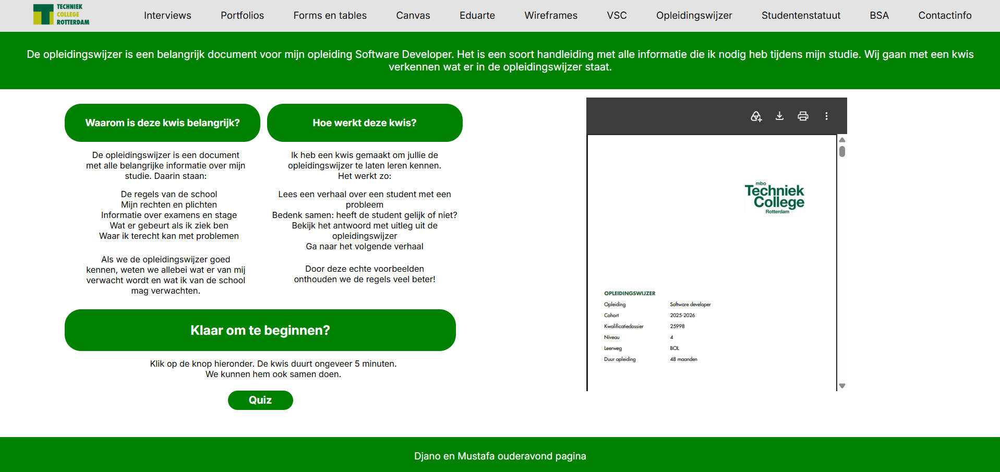

Ouderavondwebsite
Samen met Mustafa bouwde ik een website voor een ouderavond. We verdeelden het werk zonder vaste rollen en werkten allebei aan verschillende onderdelen. In dit project werdt gebruik gemaakt vanHTML, CSS en Figma. Dit was ons allereerste project in de opleiding en we wisten nog niet veel over webdevelopment.

Bekijk de repository